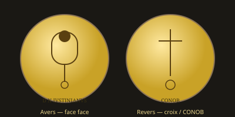

Héraclius sur les Médailles
De la guerre perse à l'Empire médiéval — le solidus et le basileus

Contexte historique
Héraclius (610–641) hérite d'un Empire en péril : les Perses sassanides prennent Jérusalem (614) et la Vraie Croix, menacent Constantinople. Après une guerre longue et dramatique, Héraclius reprend les provinces orientales et restitue la Croix (628). Mais dès les années 630, les armées arabes s'emparent de la Syrie, de l'Égypte et de la Palestine.
Sous son règne, le grec remplace progressivement le latin dans l'administration ; le titre de basileus s'impose. L'Empire « romain d'Orient » devient pleinement ce que les modernes appellent l'Empire byzantin.
Monnayage d'Héraclius
Solidus : portraits d'Héraclius avec son fils Héraclius Constantin (et parfois Héraclonas) — image de la dynastie et de la continuité.
Revers : croix potencée sur degrés (croix de Golgotha), symbole de la reconquête et de la foi.
Bronzes : ateliers orientaux, types de nécessité pendant les guerres.
L'iconographie religieuse s'affirme : la croix domine, le portrait devient plus hiératique, annonçant le monnayage médiobyzantin.
Éclaircissement
Les monnaies d'Héraclius fixent le basculement : un Empire encore romain par son droit et son solidus, déjà byzantin par sa langue, sa théologie et son image du souverain. Elles clôturent le long arc ouvert par Romulus et les médailles de familles, et ouvrent le millénaire byzantin.